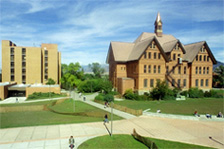

|  |
The Yogo Data Management System was created at the Center for Computational Biology, Montana State University.
If you are looking for more information, or if you have feedback or suggestions, please let us know. neurosys-support@montana.edu
Dr. Gwen Jacobs, Asst. CIO and Director of Academic Computing
Ivan Judson, Computational Research Scientist
Ryan Heimbuch, Software Engineer
Chris Jaeger, Software Engineer
Ben Livingood, Software Engineer
Pol Llovet, Software Engineer
Libbey White, Software Engineer